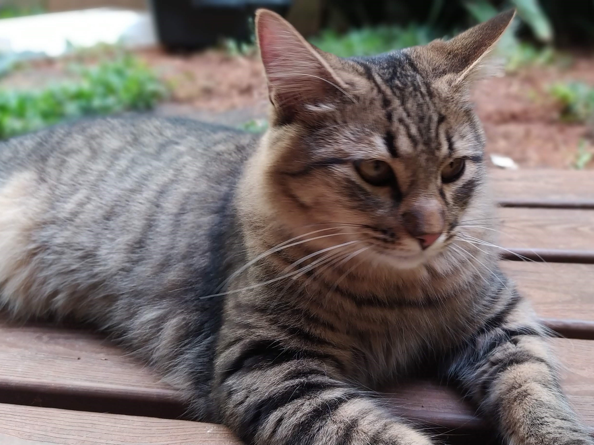
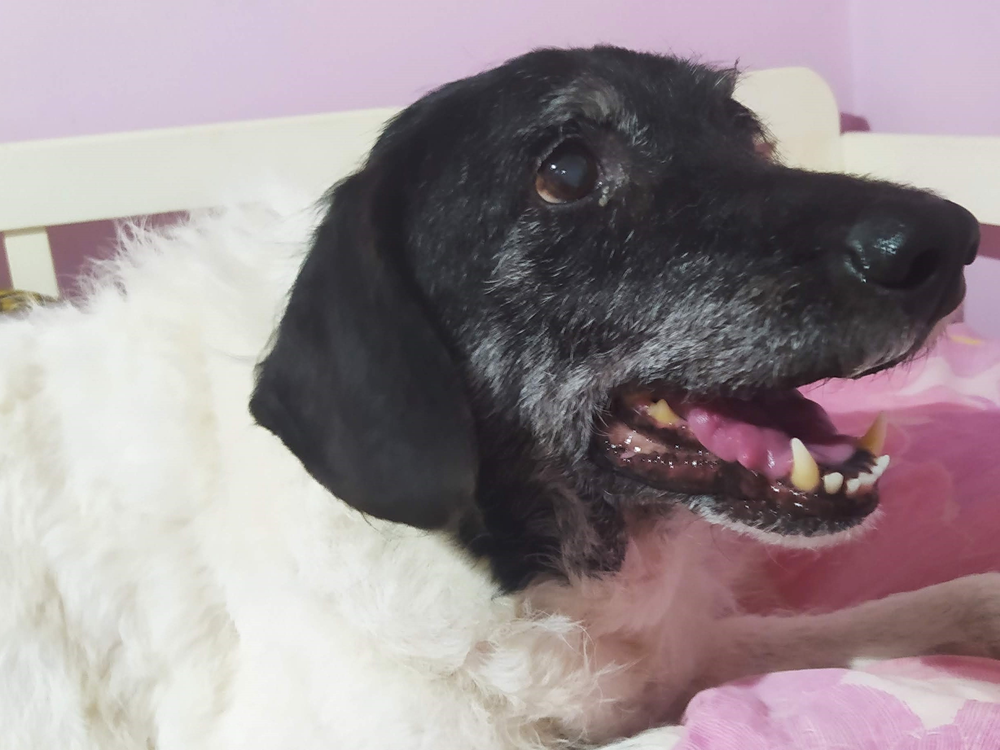
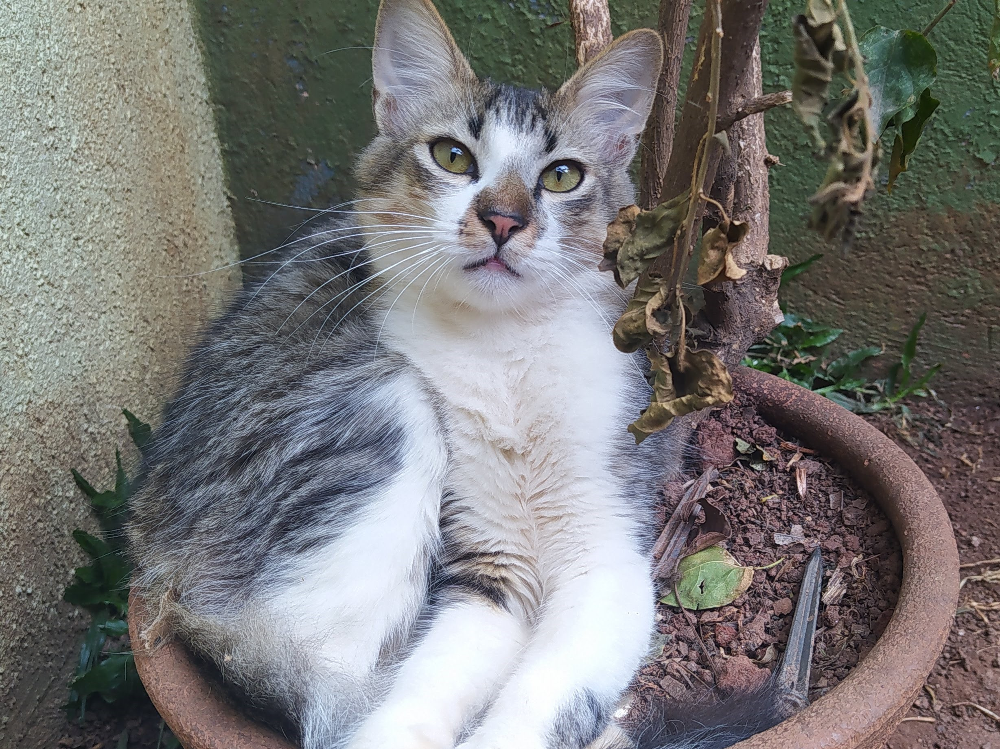
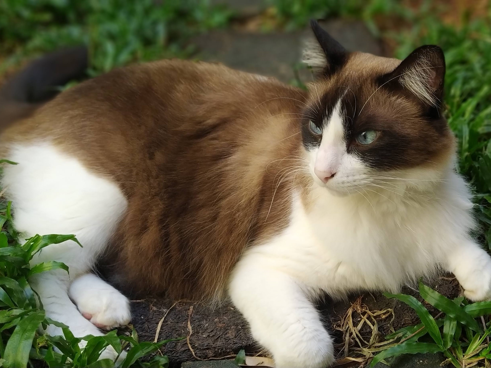
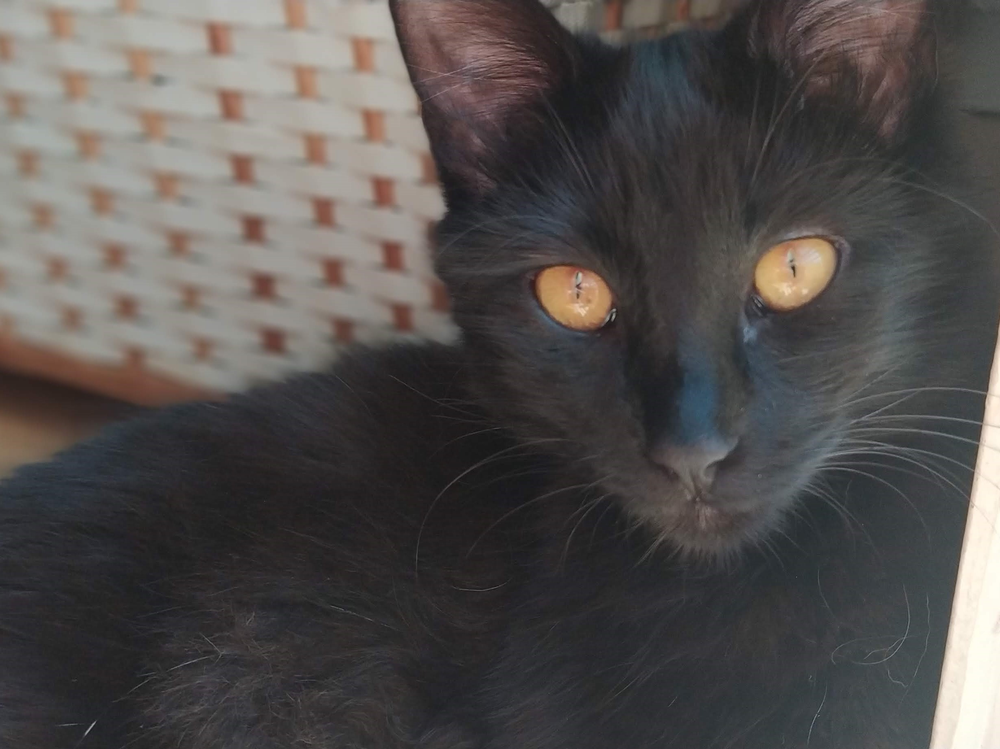
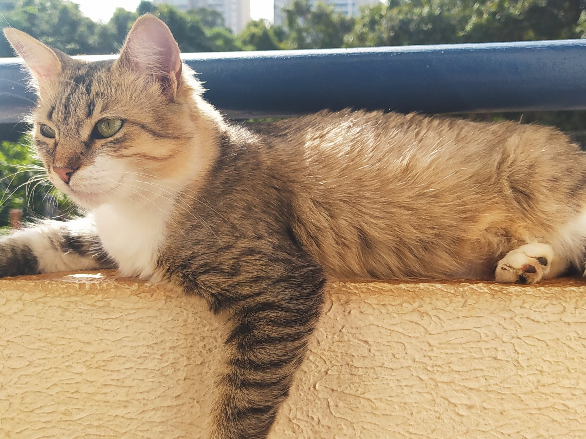
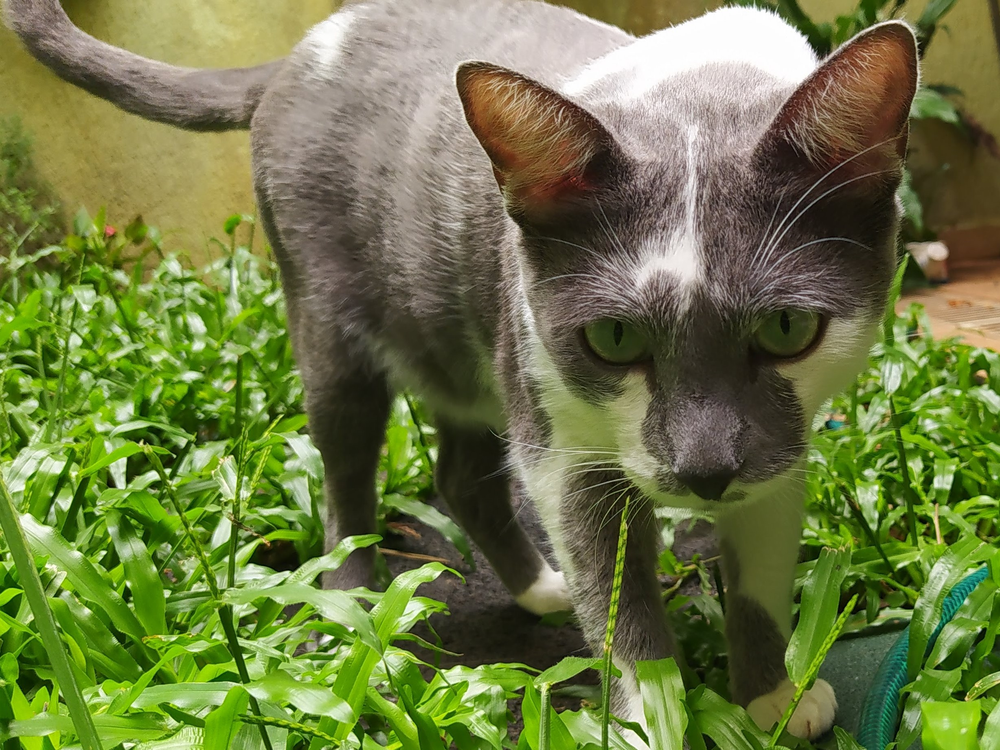
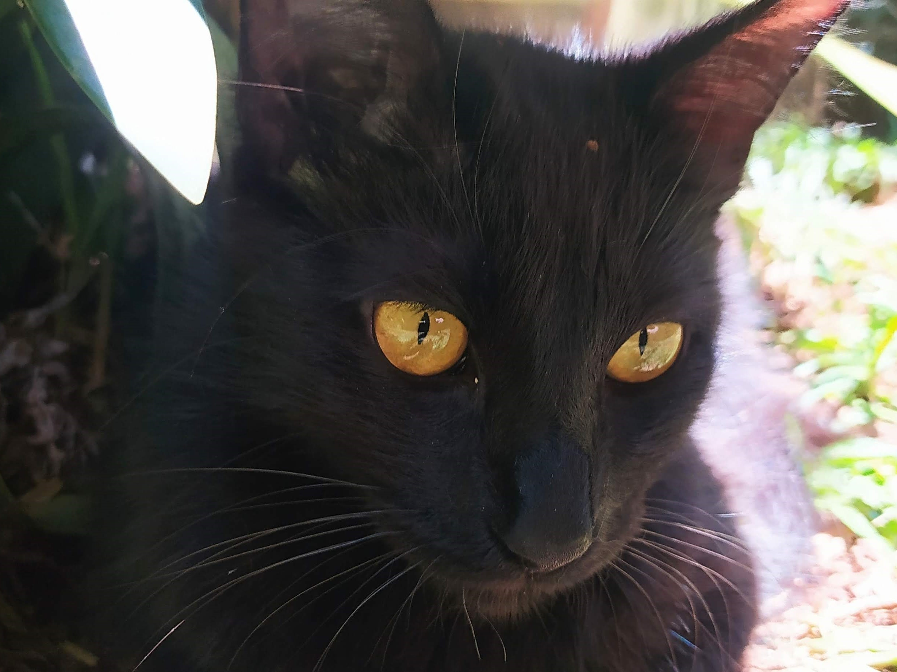
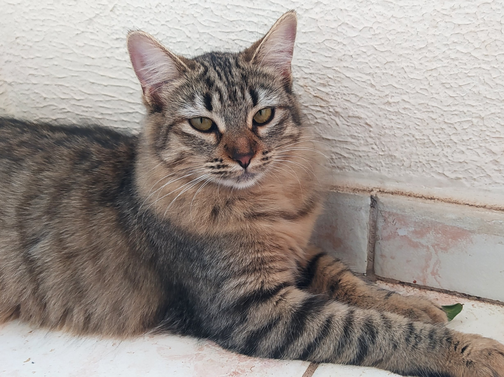
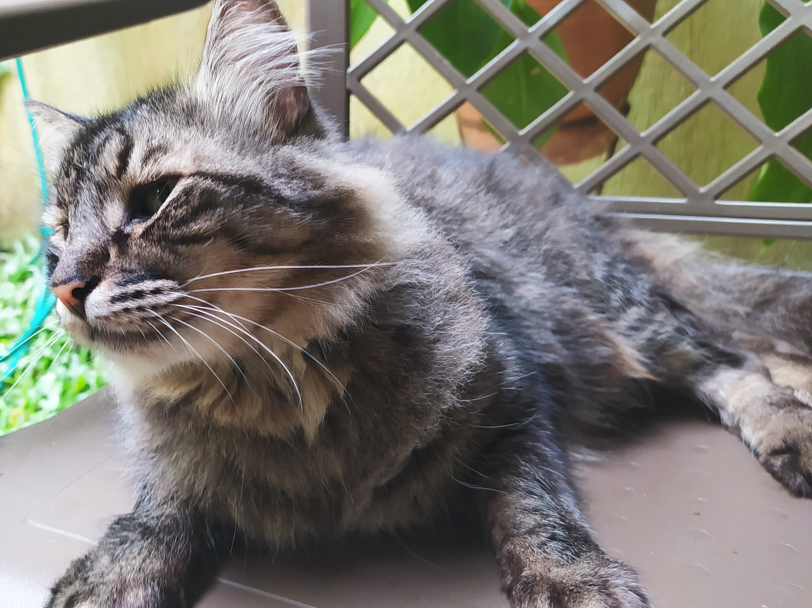

Aslam
Idade
Menos de 1 ano (2020)
Descrição
Brincalhão, carinhoso, facilmente confundido com o Vanderley
Poder especial
Se espreguiçar de um jeito MUITO FOFO

Dogão
Idade
13 anos (2008)
Descrição
Animado, não vai muito com a cara de outros cachorros, AMA passear e é um pouco mimado :P
Poder especial
Te obrigar a levar ele pra passear

Edmundo
Idade
Menos de 1 ano (2020)
Descrição
Extremamente pestinha, carinhoso e tem o miadinho mais manhento que você vai ouvir na vida
Poder especial
Derrubar televisões

Jorge Thomas
Idade
4 anos (2017)
Descrição
Tem uma paz interior invejável, é meio medroso, mas às vezes gosta de tentar fugir de casa
Poder especial
Fugir pela janela sem ninguém perceber

Lúcia
Idade
Menos de 1 ano (2020)
Descrição
Muito carinhosa, brincalhona, faladeira e é facilmente confundida com o Pedro
Poder especial
Fazer você se apaixonar por ela

Nárnia
Idade
2 anos (2019)
Descrição
Tem personalidade forte, nem sempre é muito amigável, mas gosta de um carinho quando - e somente quando - quer
Poder especial
Ser fofa e te deixar com medo ao mesmo tempo

Newton
Idade
Mais ou menos 4 anos (indeterminado)
Descrição
É super carinhoso, comilão e brincalhão
Poder especial
Colocar a cabeça embaixo da sua mão pra receber carinho

Pedro
Idade
Menos de 1 ano (2020)
Descrição
É agitado, gosta de aprontar com os irmãos, parece um morceguinho e é facilmente confundido com a Lúcia
Poder especial
Ficar confortavelmente em cima do ombro da Soph

Suzana
Idade
Menos de 1 ano (2020)
Descrição
Extremamente fofinha e carinhosa e sempre dorme com a barriguinha pra cima
Poder especial
Rasgar qualquer saco que tenha comida dentro
